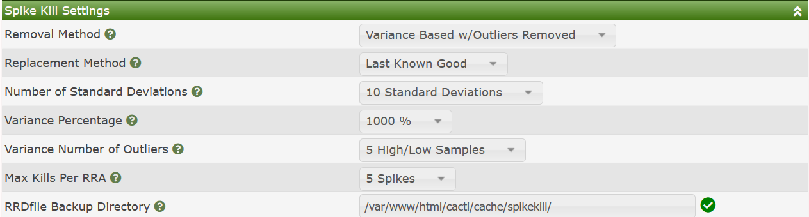
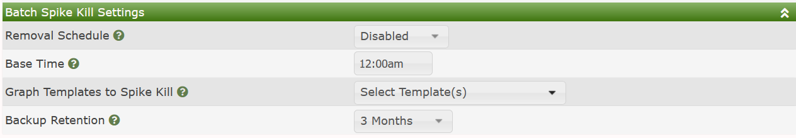

Certain types of RRDtool based Data Sources can from time to time generate what are look like to the casual observer spikes. These spikes can make your Cacti Graphs unreadable.
Spike happen when you either have set no maximum value on your Cacti Data Template by using a 'U' as the Maximum Value, or when certain COUNTER based RRDfiles have their counter data overflow, and start counting again from zero. When this happens recent versions of RRDtool, like version 1.7, handle these overflows quite well, but for some older RRDtool versions, these changes can result in these spikes.
There are also cases where for some reason the Cacti system goes offline, and therefore your Cacti Graphs will develop what are referred to as gaps.
Cacti provides two gap filling options from the user interface. In the image below, you can see the default Settings for Cacti's Spike Killer GUI.

Those settings include:
Removal Method - Cacti supports both Variance and Standard Deviation methods. When calculating those values, you have the ability to filter out outliers such that they don't negatively impact those calculations.
Replacement Method - When filling the Gap, what data point should be used. There is Last Known Good, which would be the last good known value, Average, which uses the Average value for the RRDfile data source, and NaN's which will cause the Graph to gap, but the spikes will be removed.
Number of Standard Deviations - This is the number of Standard Deviations above the Average that are required before the value is considered a spike. It only applies to the Standard Deviation spike removal method.
Variance Percentage - When using the Variance spike detection method, the percentage above variance before considering a value a spike.
Variance Number of Outliers - The number of high values to ignore when calculating the Variance.
Max Kills Per RRA - The maximum number of spike to remove from any given RRDfile Data Source.
RRDfile Backup Directory - If you wish to backup RRDfiles that have been altered by Spike Kill, they will be placed in this directory.
Cacti also allows administrators to kill Cacti spikes on a periodic basis using a batch process. From this batch process, you select the time of day, the Graph Templates to perform Spike Kill operations on, and the backup retention for RRDfiles that have spikes removed from them. The image below shows those settings.

Of note is that first of all, the only Graph Templates that are shown are Graph Templates that include COUNTER type Data Sources. It is also worth noting that only Data Query type Graph Templates are supported as of the current Cacti version.
Copyright (c) 2004-2024 The Cacti Group